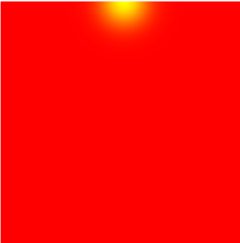
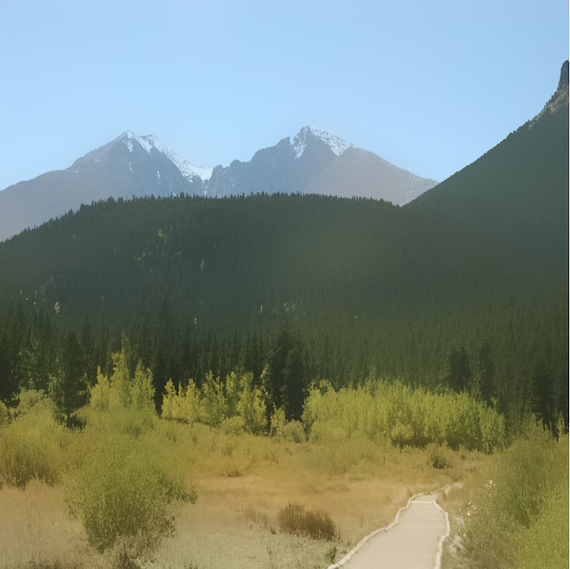
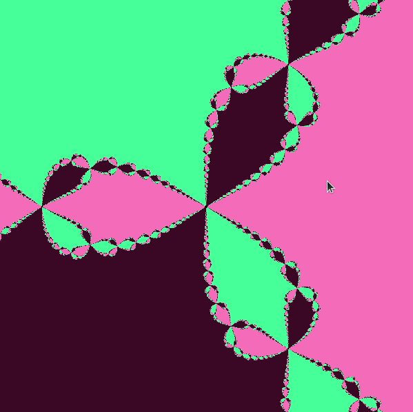
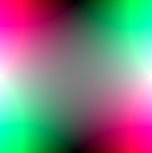
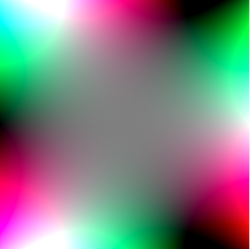
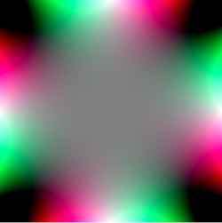

Assignment 5: Shaders (40 Points)
Click here to see the art contest submissions!
Overview
The purpose of this assignment is to familiarize students with the the GLSL programming paradigms, particularly vertex and fragment shaders. This will warm students up for the final assignment on ray tracing.
Getting Started
Click here to download the repository of skeleton code for this assignment.Submission Instructions
You will submit all of your fragment shaders to Canvas when you are finished. Also let me know what your name/pseudonym is for the art contestGeneral Tips:
- Write your shaders one step at a time! Debugging is very difficult because the only output is a color per pixel. Try to use the colors to help you debug.
- If your shader doesn't compile, drop into the debugging console to see why. Syntax error messages will be printed there with line numbers in the shader.
-
If you get an error like the following
Then it probably means you need to write a number as a decimal. There is no explicit casting, so when GLSL seesERROR: 0:15: '+' : wrong operand types - no operation '+' exists that takes a left-hand operand of type 'const int' and a right operand of type 'mediump float' (or there is no acceptable conversion)10, for instance, it assumes it's an integer. So you would need to write10.0
Task 1: Rise N' Shine (10 Points)
Create an animation of a sun that starts on the left hand side of the screen and moves in a semicircular arc across the screen to the right hand side. When it's at the left or right side, the background should be dark. When it reaches its peak at the center of the screen, it should be lighter. When it reaches its minimum at the right hand side of the screen, it should restart on the left. More specifically:
- The uniform variable
uTimeholds the elapsed time since the beginning of the simulation. You should make a circle with sines and cosines of this variable. - The green channel of the output pixel should be
\[ e^{-dR^2/r^2} \]
wheredRis the distance of the pixel to the center of the disc, andris the radius of the disc. - The red channel should be a sine wave that starts at zero and reaches its peak at 1, and then ends at zero before it's reset.
circle.frag for this task. You do not need to touch the vertex shader or HTML fileGui Tester:
circle.html- The function for raising
eto a power in GLSL isexp -
Be careful when defining vector in GLSL. This is a valid line of code
vec2 x = vec2(1.0, 3.0);
This is not a valid line of code
vec2 x = (1.0, 3.0);
You will get some confusing error messages at compile time if you do the latter. - Since you're only going through a semicircle and it resets each time, you will need to set a variable that's equal to the remainder of the uniform time divided by PI. Since the modulus % operator doesn't exist, one way you can tackle this is to use the
floor()function instead. Though students last year came up with a variety of workarounds.
Screenshots of A Working Implementation
|  |
Task 2: Bilateral Filter
We saw how taking an average of pixels nearby in a square window leads to a blurred version of an image. Below is an example
Original
Mean in a 13x13 Window
One drawback of this in certain applications is that it blurs everything uniformly. Particularly in applications where we want to get rid of certain types of random noise, this is not the best choice, as it removes the noise but also important high frequency image properties like edges. For example, notice how blurry the edges between the mountains and the sky are.
It is possible to do a smarter, edge-aware blurring by doing a special kind of weighted average instead of a uniform average. Let x, y be the location of a pixel that we want to blur, and x2, y2 be the coordinates of another point nearby. Let I(x, y) and I(x2, y2) be the RGB vectors of each of these pixels, and let σd and σr be two scale parameters. Then the weight for the point at location (x2, y2) is as follows.
\[ w(x_2, y_2) = e^{- \left( \frac{(x_2-x)^2 + (y_2-y)^2}{2 \sigma_d^2} \right) } * e^{- \left( \frac{||I(x, y) - I(x_2, y_2)||^2}{2 \sigma_r^2} \right) } \]
To perform a bilateral filter, simply multiply each pixel I(x2, y2) by these weights over all (x2, y2) in some window, and then divide by the sum of the weights. Below is an example of a bilateral filter with σd = 0.05 and σr = 0.2.
Notice how all of the edges (mountain/mountain boundaries, mountain/sky boundaries, road boundaries) are intact, but the finer details have been smoothed out. This is precisely what the bilateral filter was meant to accomplish. Not only can this help get rid of noise, but you see it also has an interesting cartoon-like aesthetic, so it can be used for artistic purposes as well.
Code to write: You only need to editbilateral.frag for this task. You do not need to touch the vertex shader or HTML file. The uniform uSigmar holds σr, and the uniform uSigmad holds σdGui Tester:
bilateral.html- Recall that ||v|| is the magnitude of a vector v, and ||v||2 is the squared magnitude of a vector v. Also, recall that ||v||2 can be obtained as the dot product of v and itself.
- You should definitely declare at least two accumulator variables outside of your loop: one which stores the weighted vectors sum of the pixels in a neighborhood, and the other which stores the sum of the weights, which you should divide by after the loop.
Shaders are particularly helpful for this filter is because, unlike embossing, the laplacian, and a weighted average whose weights only depend on location, the bilateral filter is nonlinear. What this means is, unlike those other filters, it's not possible to apply a Fourier transform trick to speed the bilateral filter up, so we're stuck actually slogging through the weighted mean calculation. So it's very nice to be able to do this in parallel.
Task 3: Newton Fractals (15 Points)
A fractal is an object which is "self-similar," possibly across an infinite amount of rescaling. Roughly, what this means is if we zoom in on the shape, we will see the shape repeated. Or in other words, the shape is made up of itself. We saw in class that looking at iterations of the equation below from different initial complex numbers z0
\[ z_{n+1} = z_n^2 + c \]
allowed us to generate a very fancy, beautiful fractal called the Julia Set. In this exercise, you will explore another type of fractal known as a Newton Fractal.Recall that the fundamental theorem of algebra states that every non-zero polynomial f(z) of degree n in a single complex variable has n complex roots, or numbers z where f(z) = 0. For example, the polynomial
\[ f(z) = z^3 - 1 \]
Is of degree 3, and so it has 3 roots. They happen to be as below (you can check with complex multiplication that these numbers indeed give 0 when you plug them in) \[ z = \left\{ 1, -\frac{1}{2} + \frac{\sqrt{3}}{2} i, -\frac{1}{2} - \frac{\sqrt{3}}{2} i \right\} \] But in general, it's pretty tough to figure out what the roots are. That's where Newton's method comes in. If you have an initial guess z0 of what a root might be, then you can perform iterations to update your guess, and it will get closer and closer to a true root if you are within a "basin of attraction." In particular, the update rules for a polynomial equation f(z) are\[ z_{n+1} = z_n - \frac{f(z_n)}{f'(z_n)} \]
where f' is the derivative of f, and the division is complex division. What's really strange about the above procedure, however, is that which root you converge to can be extremely sensitive to your initial starting point in some places. In particular, if you plot the roots in different colors at their starting point, then it will form a fractal! Below are a few examplesz3-1
z10-1

2z7-z6-1

Your job will be to implement Newton's method and to draw a pixel with a color according to the root it converges to. The starting point at each pixel has been provided to you as z. The coefficients of the polynomial you're solving are represented in the uniform array uCoeffs.
This is a task that you should definitely do in stages. You will be editing the file newton.frag and viewing the results in newton.html. A series of skeleton methods and comments have been provided to guide you through this. As you're going along, recall that the number of iterations of the loop needs to be known at compile time, so you'll often want to loop up to the constant MAX_DEGREE, even if you're nowhere near that degree for what you're doing.
Step 1: Implement complex powers
The first thing you should do is fill in the method pow which raises a complex number z to a power of n. Then, if you let
zret = pow(z, n)
and you color as
gl_FragColor = vec4(zret[0], zret[1], 0.5*(zret[0]+zret[1]), 1.0);
Then you should get the following images for different powers.
z2 |
z3 |
z4 |
|  |  |  |
Do not proceed until these images look right!
Step 2: Implement polynomial and polynomialDeriv methods
Now that you have the pow method implemented for complex powers, you can evaluate a complex polynomial by adding to together all of its powers scaled by the appropriate coefficients. You can also evaluate its derivative according to the power rule. More information is provided in the comments.
Step 3: Complex Division
Fill in the complexDiv function to perform the division of two complex numbers. Have a look at the formula on Wolfram Mathworld.
Step 4: Putting It All Together
Now you're ready to write newton's method finally. Replace the line z = pow(z, 2) instead with a loop that applies MAX_ITERS iterations of Newton's method, using the functions that you wrote above
\[ z_{n+1} = z_n - \frac{f(z_n)}{f'(z_n)} \]
You can color the root you come up with using the code provided:
z = (z + 1.0)/2.0;
gl_FragColor = vec4(z[0], z[1], 0.5*(z[0]+z[1]), 1.0);
Have fun, and enjoy the beautiful pictures!
Task 4: Art Contest (5 Points)
Do something creative with shaders! The sky is the limit here! For instance, think about how you might combine textures with some of the other effects we saw. Animations would be particularly cool. The winner will receive 5 extra credit points. You may do a buddy submission for the art contest as well, but I will judge them a little bit harder.